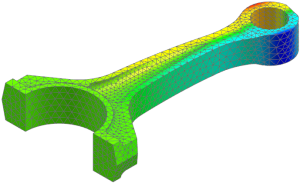

Create a contour plot of nodal results
Some of the results in the Post-Processing Navigator are nodal results. Nodal results have a single value at each node.
 Post-Processing Navigator
Post-Processing Navigator
-

 Displacement - Nodal (expand)
Displacement - Nodal (expand)
The displacement components and displacement magnitude are listed under the Displacement - Nodal node in the Post-Processing Navigator.
-
 Displacement - Nodal
Displacement - Nodal X Y Z
X Y Z Magnitude
Magnitude
-
 Y
Y -

-

The coloring transitions smoothly across element edges.